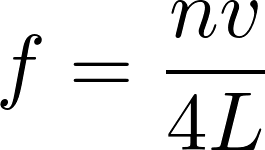
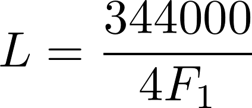

Click Record and produce an unobstructed vowel (the last sound in the English word comma) continuously for 2 seconds.
First, click "Allow" in your browser to let this page to record your voice.
If we simplify things significantly, the human vocal tract is really just a tube that is closed on one end (where your vocal folds vibrate) and open on another end (your lips).
Given this model, there is a formula that expresses the relationship between resonance frequencies (f, which we is what we are measuring here), the speed of sound (v, which we know), and the length of the tube (L, which is what we are trying to figure out):
The n here refers to which resonance frequency we're talking about. Vowels will usually have four or more distinguishable resonance frequencies, but we're just dealing with the first (F1) here, so we can replace this with 1. We can also replace v with 34400 cm/s since we know that's the speed of sound at sea level at room temperature (20°C). And since we know the frequency but want to determine the length, we can solve for L to get this equation:
When you hit record, we are using a Javascript library that wraps the browser's audio recording API to record a 2 second WAV audio clip. Thanks to Matt Diamond's Recorderjs project for making that library.
This data is then sent to the server where it is processed using Praat, a seriously cool program that can do all sorts of phonetic analysis. This gives us the first formant which we then plug into the above equation.
You can see the source code for this page and the server side Praat script on GitHub.
It is pretty hard to get people to produce an unobstructed vowel consistently so that is probably the biggest limitation with this method. We're also using a simplified model of the vocal tract, likely using a less than perfect microphone, and only taking a 2 second sample.
The point of this is not to actually give you an accurate measure, but rather to show it's possible to calculate the length of the vocal tract from a recording, which I think is pretty cool.